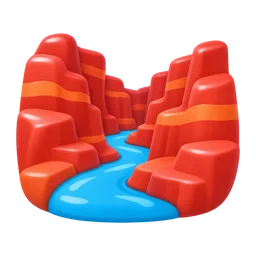
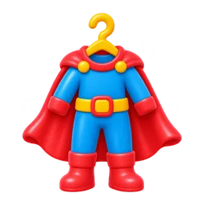
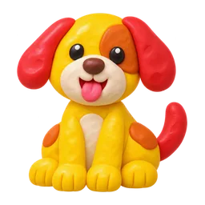
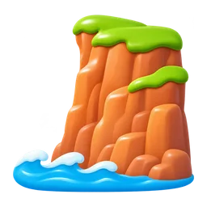
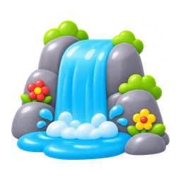
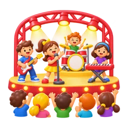

| explorer
Khoa học & Khủng long |
photosynthesis
quang hợp |
🌿 |
Ảnh riêng: a green leaf under a bright sun with rays shining on it |
🌿 chỉ là chiếc lá, không thấy nắng | |
| explorer
Khoa học & Khủng long |
carnivore
động vật ăn thịt |
Phosphor: Knife |
🥩 |
Phosphor là con dao; 🥩 đúng ý ăn thịt hơn | |
| explorer
Công nghệ & Robot |
sensor
cảm biến |
Phosphor: Binoculars |
Ảnh riêng: a small electronic motion sensor device with curved signal waves coming from it |
Andie: tạo ảnh mới | |
| explorer
Công nghệ & Robot |
circuit
mạch điện |
Phosphor: Lightning |
Ảnh riêng: a green electronic circuit board with shiny lines and small parts |
Phosphor là tia sét, 🔌 là phích cắm | |
| explorer
Môi trường & Bảo tồn |
biodiversity
đa dạng sinh học |
Phosphor: CirclesThreePlus |
Ảnh riêng: a butterfly, a frog, a flower and a small bird together |
Phosphor là mấy vòng tròn, 🦋 chỉ là một con bướm | |
| explorer
Môi trường & Bảo tồn |
ecosystem
hệ sinh thái |
Phosphor: ArrowsClockwise |
Ảnh riêng: a small pond with a fish, a frog, reeds and a dragonfly |
Mũi tên xoay vòng không nói lên hệ sinh thái | |
| explorer
Môi trường & Bảo tồn |
deforestation
phá rừng |
Phosphor: TreeEvergreen |
Ảnh riêng: several cut tree stumps with an axe beside them and a few standing trees behind |
Andie: tạo ảnh mới | |
| explorer
Môi trường & Bảo tồn |
atmosphere
khí quyển / bầu không khí |
🌫️ |
Ảnh riêng: planet Earth with a thin glowing blue layer around it |
🌫️ là sương mù | |
| explorer
Vũ trụ & Thiên văn |
orbit
quỹ đạo |
Phosphor: ArrowsClockwise |
Ảnh riêng: a small planet moving around a bright star along a dotted ring |
Phosphor là mũi tên xoay vòng | |
| explorer
Vũ trụ & Thiên văn |
gravity
trọng lực |
⬇️ |
Ảnh riêng: a red apple falling from a tree branch, with a dotted line below it pointing down |
⬇️ chỉ là mũi tên | |
| explorer
Vũ trụ & Thiên văn |
asteroid
tiểu hành tinh |
☄️ |
Ảnh riêng: a rough grey rocky asteroid in space |
☄️ trùng với comet | |
| explorer
Vũ trụ & Thiên văn |
galaxy
thiên hà |
Phosphor: Planet |
Ảnh riêng: a bright spiral galaxy of stars and glowing purple-blue dust |
Andie: tạo ảnh mới | |
| explorer
Truyền thông & Quan điểm |
propaganda
tuyên truyền |
Phosphor: Warning |
Ảnh riêng: a big loudspeaker on a pole beside a bold poster showing a raised fist |
Andie: tạo ảnh mới | |
| explorer
Sinh học & Cơ thể người |
cell
tế bào |
Phosphor: Atom |
Ảnh riêng: one round biological cell with a darker nucleus inside |
Phosphor là nguyên tử | |
| explorer
Sinh học & Cơ thể người |
muscle
cơ bắp |
Phosphor: Barbell |
💪 |
Phosphor là tạ; 💪 mới là cơ bắp | |
| explorer
Sinh học & Cơ thể người |
nerve
dây thần kinh |
Phosphor: Circuitry |
Ảnh riêng: a branching nerve cell with long thin arms |
Phosphor là bảng mạch, 🧠 là não | |
| explorer
Sinh học & Cơ thể người |
protein
protein |
Phosphor: BowlFood |
🥩 |
Phosphor là tô thức ăn chung chung; 🥩 đúng hơn | |
| explorer
Sinh học & Cơ thể người |
digest
tiêu hóa |
🫃 |
Ảnh riêng: a simple human stomach organ |
🫃 là người đàn ông mang thai | |
| explorer
Sinh học & Cơ thể người |
oxygen
oxy |
Phosphor: Drop |
Ảnh riêng: a blue oxygen tank connected to a clear breathing mask |
Andie: tạo ảnh mới | |
| explorer
Lịch sử & Văn minh |
ancient
cổ đại |
Phosphor: HourglassMedium |
Ảnh riêng: a crumbling ancient stone temple with broken columns |
Andie: tạo ảnh mới | |
| explorer
Lịch sử & Văn minh |
civilisation
nền văn minh |
Phosphor: BookOpenText |
Ảnh riêng: an ancient city with stone buildings and a pyramid beside a river |
Andie: tạo ảnh mới | |
| explorer
Kinh tế & Tài chính |
poverty
đói nghèo |
Phosphor: Coins |
Ảnh riêng: an empty open brown wallet |
Phosphor là đồng xu, ngược nghĩa nghèo | |
| explorer
Kinh tế & Tài chính |
wage
tiền lương |
Phosphor: Briefcase |
💵 |
Phosphor là cái cặp; 💵 đúng hơn | |
| explorer
Văn học & Nghệ thuật |
character
nhân vật |
Phosphor: Detective |
Ảnh riêng: a storybook wizard standing on an open book |
Andie: tạo ảnh mới | |
| explorer
Văn học & Nghệ thuật |
poetry
thơ ca |
🌸 |
Ảnh riêng: a feather quill pen writing on a sheet of paper with a small heart |
🌸 là bông hoa | |
| explorer
AI & Công nghệ số |
virtual
ảo |
🕶️ |
Ảnh riêng: a smiling child wearing a VR headset with a glowing digital grid around them |
Andie: tạo ảnh mới | |
| explorer
AI & Công nghệ số |
platform
nền tảng |
Phosphor: PresentationChart |
Ảnh riêng: a smartphone screen showing a grid of colorful app squares |
Andie: tạo ảnh mới (Explorer dùng chung vì cùng nghĩa) | |
| explorer
Luật pháp & Công lý |
justice
công lý |
Phosphor: Shield |
⚖️ |
Phosphor là cái khiên | |
| explorer
Luật pháp & Công lý |
lawyer
luật sư |
⚖️ |
💼 |
Nhường ⚖️ cho justice cùng chủ đề | |
| explorer
Tâm lý học |
anxiety
lo âu |
Phosphor: Warning |
😰 |
Phosphor là biển cảnh báo; 😰 rõ cảm xúc | |
| explorer
Tâm lý học |
stress
căng thẳng |
😤 |
😫 |
😤 là tức giận | |
| explorer
Tâm lý học |
memory
trí nhớ |
💾 |
🧠 |
💾 là đĩa mềm, trẻ không biết | |
| explorer
Y học & Sức khỏe |
surgery
phẫu thuật |
Phosphor: Syringe |
Ảnh riêng: a friendly surgeon in green scrubs and mask holding surgical tools |
Phosphor là ống tiêm | |
| explorer
Y học & Sức khỏe |
prescription
đơn thuốc |
Phosphor: FirstAid |
Ảnh riêng: a doctor's prescription paper next to a small pill bottle |
Phosphor là hộp cứu thương | |
| explorer
Địa lý & Địa hình |
peninsula
bán đảo |
Phosphor: Island |
Ảnh riêng: a strip of green land sticking out into blue sea, water on three sides, seen from above |
Phosphor là hòn đảo, khác bán đảo | |
| explorer
Địa lý & Địa hình |
plateau
cao nguyên |
Phosphor: SunHorizon |
Ảnh riêng: a high wide mountain with a flat top |
Phosphor là mặt trời mọc | |
| explorer
Địa lý & Địa hình |
delta
châu thổ |
Phosphor: Waves |
Ảnh riêng: a river splitting into several branches as it reaches the sea, seen from above |
Phosphor là sóng nước | |
| explorer
Địa lý & Địa hình |
equator
đường xích đạo |
Phosphor: GlobeSimple |
Ảnh riêng: Earth globe with one bright line around its middle |
Quả địa cầu trơn không thấy đường xích đạo | |
| explorer
Địa lý & Địa hình |
longitude
kinh độ |
Phosphor: ArrowUpRight |
Ảnh riêng: Earth globe with curved lines running from top to bottom |
Phosphor là mũi tên chéo | |
| explorer
Địa lý & Địa hình |
latitude
vĩ độ |
Phosphor: NavigationArrow |
Ảnh riêng: Earth globe with straight lines running from left to right |
Phosphor là mũi tên điều hướng | |
| explorer
Địa lý & Địa hình |
canyon
hẻm núi |
🏔️ |
 Ảnh đã có |
Đã có ảnh hẻm núi, chỉ cần nối | |
| explorer
Địa lý & Địa hình |
estuary
cửa sông |
Phosphor: AnchorSimple |
Ảnh riêng: a wide river mouth opening into the sea, seen from above |
Phosphor là mỏ neo | |
| explorer
Địa lý & Địa hình |
tundra
đài nguyên |
❄️ |
Ảnh riêng: flat snowy land with low moss patches and a reindeer |
❄️ chỉ là bông tuyết | |
| explorer
Địa lý & Địa hình |
savanna
thảo nguyên |
🌾 |
Ảnh riêng: dry golden grassland with one flat-topped acacia tree |
🌾 là bó lúa | |
| explorer
Dinh dưỡng & Ẩm thực |
nutrition
dinh dưỡng |
Phosphor: Nut |
Ảnh riêng: a plate with a balanced meal of vegetables, fruit, fish and rice |
Andie: tạo ảnh mới | |
| explorer
Dinh dưỡng & Ẩm thực |
ingredient
nguyên liệu |
Phosphor: BowlFood |
Ảnh riêng: a carrot, an egg, a tomato and a small bag of flour together |
Andie: tạo ảnh mới | |
| explorer
Dinh dưỡng & Ẩm thực |
organic
hữu cơ |
Phosphor: GlobeSimple |
Ảnh riêng: a basket of fresh vegetables with a green leaf-shaped label |
Andie: tạo ảnh mới (Explorer, Ranger dùng chung vì cùng nghĩa) | |
| explorer
Biến đổi khí hậu |
permafrost
tầng đất đóng băng vĩnh cửu |
❄️ |
Ảnh riêng: cross-section of ground with a layer of soil on top and thick blue ice beneath |
❄️ chỉ là bông tuyết | |
| explorer
Biến đổi khí hậu |
iceberg
tảng băng trôi |
🧊 |
Ảnh riêng: a white iceberg floating in the sea with a big part visible under the water |
🧊 là viên đá lạnh | |
| explorer
Biến đổi khí hậu |
greenhouse
hiệu ứng nhà kính |
🏡 |
Ảnh riêng: a glass greenhouse with green plants inside |
🏡 là ngôi nhà có vườn | |
| explorer
Biến đổi khí hậu |
sea level
mực nước biển |
🌊 |
Ảnh riêng: a wooden measuring post with marks standing in the sea, water reaching one mark |
🌊 chỉ là sóng | |
| explorer
Biến đổi khí hậu |
glacier
sông băng |
Phosphor: Snowflake |
Ảnh riêng: a huge river of blue-white ice flowing between two mountains |
Phosphor là bông tuyết | |
| explorer
Biến đổi khí hậu |
drought
hạn hán |
Phosphor: SunHorizon |
Ảnh riêng: cracked dry brown ground with one wilted plant |
Phosphor là mặt trời mọc | |
| explorer
Biến đổi khí hậu |
flood
lũ lụt |
Phosphor: Waves |
Ảnh riêng: a small house with brown flood water up to its windows |
Phosphor là sóng nước, không thấy lũ | |
| explorer
Biến đổi khí hậu |
wildfire
cháy rừng |
🔥 |
Ảnh riêng: a green forest with big flames burning the trees |
🔥 chỉ là ngọn lửa | |
| explorer
Biến đổi khí hậu |
heatwave
đợt nắng nóng |
🌡️ |
🥵 |
🌡️ trùng nhiệt độ cùng chủ đề | |
| explorer
Cuộc sống số |
hacker
tin tặc |
🕵️ |
Ảnh riêng: a person in a dark hoodie typing on a laptop with an open padlock beside it |
Andie: tạo ảnh mới | |
| explorer
Kiến trúc |
blueprint
bản thiết kế |
Phosphor: MapTrifold |
Ảnh riêng: a blue architectural plan with white lines, partly rolled up |
Phosphor là bản đồ | |
| explorer
Kiến trúc |
foundation
nền móng |
Phosphor: Building |
Ảnh riêng: cross-section of a small house with a thick concrete base below ground |
Phosphor là cả tòa nhà | |
| explorer
Kiến trúc |
column
cột trụ |
🏟️ |
Ảnh riêng: one tall white stone classical column |
Andie: tạo ảnh mới | |
| explorer
Kiến trúc |
arch
vòm cung |
🌉 |
Ảnh riêng: a stone archway |
🌉 là cây cầu | |
| explorer
Kiến trúc |
dome
mái vòm |
⛩️ |
Ảnh riêng: a building with one big round dome on top |
⛩️ là cổng đền Nhật | |
| explorer
Kiến trúc |
heritage
di sản |
Phosphor: BookOpen |
Ảnh riêng: an old temple gate beside an ancient clay vase |
Andie: tạo ảnh mới (Explorer dùng chung vì cùng nghĩa) | |
| explorer
Âm nhạc & Biểu diễn |
melody
giai điệu |
🎵 |
Ảnh đã có |
Đã có ảnh giai điệu; 🎵 là nốt nhạc chung | |
| explorer
Âm nhạc & Biểu diễn |
conductor
nhạc trưởng |
🎼 |
Ảnh riêng: a friendly orchestra conductor in black suit raising a baton |
🎼 là khuông nhạc | |
| explorer
Thể thao & Thi đấu |
athlete
vận động viên |
Phosphor: Barbell |
🏋️ |
Phosphor là tạ; tránh trùng với sprint | |
| explorer
Thể thao & Thi đấu |
tournament
giải đấu |
Phosphor: FlagBanner |
Ảnh riêng: a golden trophy above a simple branching competition bracket made of lines |
Andie: tạo ảnh mới (Scholar dùng chung vì cùng nghĩa) | |
| explorer
Thể thao & Thi đấu |
rival
đối thủ |
Phosphor: UsersThree |
Ảnh riêng: two sports players facing each other, ready to compete |
Andie: tạo ảnh mới | |
| explorer
Thể thao & Thi đấu |
referee
trọng tài |
🟨 |
Ảnh riêng: a friendly football referee in a black striped shirt blowing a whistle and holding up a yellow card |
🟨 chỉ là ô vuông vàng | |
| explorer
Thể thao & Thi đấu |
penalty
hình phạt / phạt đền |
Phosphor: XCircle |
Ảnh riêng: a soccer ball on the penalty spot in front of a goal with a goalkeeper |
Andie: tạo ảnh mới | |
| explorer
Thể thao & Thi đấu |
sprint
chạy nước rút |
Phosphor: ArrowFatRight |
🏃 |
Phosphor là mũi tên; 🏃 đúng hơn | |
| explorer
Vấn đề toàn cầu |
hunger
nạn đói |
Phosphor: BowlFood |
Ảnh riêng: a worried child holding an empty bowl |
Andie: tạo ảnh mới | |
| explorer
Vấn đề toàn cầu |
democracy
dân chủ |
Phosphor: UsersThree |
Ảnh riêng: a hand putting a paper vote into a ballot box |
Andie: tạo ảnh mới | |
| explorer
Di truyền & Tiến hóa |
fossil
hóa thạch |
Phosphor: Bone |
Ảnh riêng: a spiral ammonite fossil pressed into a piece of stone |
Phosphor là khúc xương | |
| explorer
Di truyền & Tiến hóa |
organism
sinh vật |
Phosphor: TreeStructure |
🔬 |
Phosphor là sơ đồ cây | |
| explorer
Nghệ thuật & Sáng tạo |
canvas
vải bố / tranh vẽ |
Phosphor: ImageSquare |
Ảnh riêng: a blank white canvas on a wooden easel |
Phosphor là khung ảnh | |
| explorer
Nghệ thuật & Sáng tạo |
sculpture
điêu khắc / tượng |
Phosphor: Cube |
🗿 |
Phosphor là khối hộp; 🗿 đúng hơn | |
| explorer
Nghệ thuật & Sáng tạo |
abstract
trừu tượng |
Phosphor: FileText |
Ảnh riêng: an abstract painting of bold shapes and colors on a canvas |
Andie: tạo ảnh mới | |
| explorer
Nghệ thuật & Sáng tạo |
exhibition
triển lãm |
Phosphor: Star |
Ảnh riêng: two visitors looking at a framed painting and a statue on a stand |
Andie: tạo ảnh mới | |
| explorer
Nghệ thuật & Sáng tạo |
portrait
chân dung |
Phosphor: Camera |
Ảnh riêng: a painted portrait of a friendly person in a golden frame |
Phosphor là máy ảnh | |
| explorer
Nghệ thuật & Sáng tạo |
gallery
phòng triển lãm |
Phosphor: FolderOpen |
Ảnh riêng: a room with framed paintings hanging on the wall |
Phosphor là thư mục máy tính | |
| ranger
Du Lịch & Địa Điểm |
passport
hộ chiếu |
Phosphor: IdentificationCard |
Ảnh riêng: a dark red passport booklet |
📕 là sách đỏ, Phosphor là thẻ | |
| ranger
Du Lịch & Địa Điểm |
tour guide
hướng dẫn viên du lịch |
🧭 |
Ảnh riêng: a friendly tour guide holding up a small flag |
🧭 là la bàn | |
| ranger
Du Lịch & Địa Điểm |
visa
thị thực |
🗂️ |
Ảnh riêng: an open passport page with a large round entry stamp |
🗂️ là bộ chia hồ sơ | |
| ranger
Sở Thích |
knitting
đan len |
Phosphor: Needle |
🧶 |
Phosphor là cây kim; 🧶 đúng hơn | |
| ranger
Nghề Nghiệp |
librarian
thủ thư |
📚 |
Ảnh riêng: a friendly librarian holding a stack of books |
📚 đọc thành "books" | |
| ranger
Nghề Nghiệp |
mechanic
thợ sửa xe |
🔧 |
Ảnh riêng: a friendly mechanic in overalls holding a wrench beside a car |
Andie: tạo ảnh mới | |
| ranger
Nghề Nghiệp |
electrician
thợ điện |
Phosphor: Circuitry |
Ảnh riêng: a friendly electrician in a hard hat holding a wire and a screwdriver |
Phosphor là bảng mạch | |
| ranger
Nghề Nghiệp |
architect
kiến trúc sư |
Phosphor: Crane |
Ảnh riêng: a friendly architect holding a rolled blue plan |
Phosphor là cần cẩu | |
| ranger
Tiền & Mua Sắm |
cashier
thu ngân |
🏪 |
Ảnh riêng: a friendly cashier behind a cash register |
🏪 là cửa hàng | |
| ranger
Miêu Tả Con Người |
curly
xoăn |
Phosphor: WaveSine |
Ảnh riêng: a smiling child with very curly hair |
Phosphor là đường sóng | |
| ranger
Miêu Tả Con Người |
anxious
lo lắng |
Phosphor: WarningCircle |
😰 |
Phosphor là biển cảnh báo; 😰 rõ cảm xúc | |
| ranger
Miêu Tả Con Người |
patient
kiên nhẫn |
🕰️ |
Ảnh riêng: a calm smiling child sitting on a bench and waiting, with an hourglass beside them |
Andie: tạo ảnh mới | |
| ranger
Ăn Uống & Nhà Hàng |
ingredient
nguyên liệu |
Phosphor: BowlFood |
Ảnh riêng: a carrot, an egg, a tomato and a small bag of flour together |
Andie: tạo ảnh mới | |
| ranger
Ăn Uống & Nhà Hàng |
buffet
tiệc tự chọn |
Phosphor: BowlFood |
Ảnh riêng: a long table with several different dishes of food |
Phosphor là một cái tô | |
| ranger
Ăn Uống & Nhà Hàng |
serve
phục vụ |
🧑🍽️ |
Ảnh riêng: a friendly waiter carrying a tray with a dish |
🧑🍽️ không phải emoji chuẩn, máy có thể hiện thành 2 hình | |
| ranger
Sức Khỏe & Cơ Thể |
prescription
đơn thuốc |
Phosphor: FirstAid |
Ảnh riêng: a doctor's prescription paper next to a small pill bottle |
Phosphor là hộp cứu thương | |
| ranger
Sức Khỏe & Cơ Thể |
nutrition
dinh dưỡng |
Phosphor: Nut |
Ảnh riêng: a plate with a balanced meal of vegetables, fruit, fish and rice |
Andie: tạo ảnh mới | |
| ranger
Đất Nước & Văn Hóa |
tradition
truyền thống |
Phosphor: CrownSimple |
Ảnh riêng: a family in traditional clothes lighting a red paper lantern together |
Andie: tạo ảnh mới | |
| ranger
Đất Nước & Văn Hóa |
religion
tôn giáo |
⛪ |
🛐 |
⛪ chỉ một tôn giáo; 🛐 trung lập | |
| ranger
Đất Nước & Văn Hóa |
border
biên giới |
🚩 |
Ảnh riêng: a road with a striped barrier gate across it |
🚩 chỉ là lá cờ | |
| ranger
Miêu Tả Địa Điểm |
rural
nông thôn |
Phosphor: TreePalm |
🌾 |
Phosphor là cây dừa; 🌾 đúng hơn | |
| ranger
Miêu Tả Địa Điểm |
suburb
vùng ngoại ô |
Phosphor: BuildingOffice |
🏘️ |
Phosphor là tòa văn phòng; 🏘️ đúng hơn | |
| ranger
Ẩm Thực Thế Giới |
kebab
thịt nướng xiên |
🥙 |
Ảnh riêng: a metal skewer with grilled meat and vegetable pieces |
🥙 là bánh mì kẹp | |
| ranger
Ẩm Thực Thế Giới |
wok
chảo wok |
🍳 |
Ảnh riêng: a round black wok with one handle |
🍳 là chảo trứng | |
| ranger
Ẩm Thực Thế Giới |
ferment
lên men |
Phosphor: BowlSteam |
Ảnh riêng: a glass jar of pickled vegetables with small bubbles rising inside |
Andie: tạo ảnh mới | |
| ranger
Tình Bạn & Các Mối Quan Hệ |
forgive
tha thứ |
Phosphor: HeartBreak |
Ảnh riêng: two children hugging with a small mended heart above them |
Andie: tạo ảnh mới | |
| ranger
Khoa Học Cơ Bản |
gravity
trọng lực |
🍎 |
Ảnh riêng: a red apple falling from a tree branch, with a dotted line below it pointing down |
🍎 một mình đọc thành "apple" | |
| ranger
Khoa Học Cơ Bản |
dissolve
hòa tan |
Phosphor: Drop |
Ảnh riêng: a glass of water with sugar cubes melting into it |
Phosphor là giọt nước | |
| ranger
Khoa Học Cơ Bản |
molecule
phân tử |
🔬 |
Ảnh riêng: a molecule model made of colored balls joined by short sticks |
🔬 là kính hiển vi | |
| ranger
Bảo Vệ Môi Trường |
deforestation
nạn phá rừng |
Phosphor: TreeEvergreen |
Ảnh riêng: several cut tree stumps with an axe beside them and a few standing trees behind |
Andie: tạo ảnh mới | |
| ranger
Bảo Vệ Môi Trường |
organic
hữu cơ |
Phosphor: GlobeSimple |
Ảnh riêng: a basket of fresh vegetables with a green leaf-shaped label |
Andie: tạo ảnh mới (Explorer, Ranger dùng chung vì cùng nghĩa) | |
| ranger
Bảo Vệ Môi Trường |
compost
phân hữu cơ / ủ phân |
🪣 |
Ảnh riêng: a pile of compost with vegetable scraps and soil |
🪣 là cái xô | |
| ranger
Bảo Vệ Môi Trường |
wildlife
động thực vật hoang dã |
Phosphor: TreeEvergreen |
Ảnh riêng: a lion, an elephant and a parrot together among green plants |
Andie: tạo ảnh mới | |
| ranger
Bảo Vệ Môi Trường |
drought
hạn hán |
Phosphor: SunHorizon |
Ảnh riêng: cracked dry brown ground with one wilted plant |
Phosphor là mặt trời mọc | |
| ranger
Bảo Vệ Môi Trường |
ecosystem
hệ sinh thái |
Phosphor: ArrowsClockwise |
Ảnh riêng: a small pond with a fish, a frog, reeds and a dragonfly |
Mũi tên xoay vòng không nói lên hệ sinh thái | |
| ranger
Di Chuyển & Phương Tiện |
platform
sân ga / ke tàu |
Phosphor: PresentationChart |
🚉 |
Phosphor là biểu đồ, sai nghĩa "sân ga" | |
| ranger
Di Chuyển & Phương Tiện |
terminal
nhà ga / sảnh |
🏢 |
Ảnh riêng: a modern airport terminal building with big glass windows |
🏢 là tòa văn phòng | |
| ranger
Di Chuyển & Phương Tiện |
baggage claim
khu nhận hành lý |
Phosphor: BagSimple |
Ảnh riêng: a suitcase on a moving conveyor belt |
Phosphor là cái túi | |
| ranger
Thời Tiết & Khí Hậu |
forecast
dự báo thời tiết |
Phosphor: ChartBar |
Ảnh riêng: a weather map screen showing a sun and a rain cloud symbol |
Andie: tạo ảnh mới | |
| ranger
Thời Tiết & Khí Hậu |
hurricane
bão lớn / cuồng phong |
Phosphor: Tornado |
Ảnh riêng: a huge white spiral storm with a clear eye in the center, over blue ocean, seen from above |
Andie: tạo ảnh mới | |
| ranger
Thời Tiết & Khí Hậu |
flood
lũ lụt |
Phosphor: Waves |
Ảnh riêng: a small house with brown flood water up to its windows |
Phosphor là sóng nước, không thấy lũ | |
| ranger
Thể Thao & Hoạt Động |
tournament
giải đấu |
Phosphor: FlagBanner |
Ảnh riêng: a golden trophy above a simple branching competition bracket made of lines |
Andie: tạo ảnh mới (Scholar dùng chung vì cùng nghĩa) | |
| ranger
Thể Thao & Hoạt Động |
penalty
quả phạt / hình phạt |
Phosphor: XCircle |
Ảnh riêng: a soccer ball on the penalty spot in front of a goal with a goalkeeper |
Andie: tạo ảnh mới | |
| ranger
Thể Thao & Hoạt Động |
referee
trọng tài |
🟨 |
Ảnh riêng: a friendly football referee in a black striped shirt blowing a whistle and holding up a yellow card |
🟨 chỉ là ô vuông vàng | |
| ranger
Thể Thao & Hoạt Động |
marathon
chạy marathon |
🏅 |
🏃 |
🏅 là huy chương | |
| ranger
Lễ Hội & Phong Tục |
parade
cuộc diễu hành |
🎉 |
Ảnh đã có |
Đã có ảnh diễu hành; 🎉 là tiệc | |
| ranger
Lễ Hội & Phong Tục |
costume
trang phục / hóa trang |
👘 |
 Ảnh đã có |
Đã có ảnh trang phục; 👘 là kimono | |
| ranger
Lễ Hội & Phong Tục |
decorate
trang trí |
Phosphor: Swatches |
Ảnh riêng: a friendly child hanging a colorful paper garland on a wall |
Andie: tạo ảnh mới | |
| ranger
Lễ Hội & Phong Tục |
carol
bài hát Giáng Sinh |
🎵 |
Ảnh riêng: two friendly children singing from songbooks in the snow |
🎵 trùng nốt nhạc chung | |
| ranger
Nhà Cửa & Sinh Hoạt |
curtain
rèm cửa |
🪟 |
Ảnh riêng: a window with curtains pulled to both sides |
🪟 chỉ là cửa sổ | |
| ranger
Nhà Cửa & Sinh Hoạt |
balcony
ban công |
Phosphor: BuildingApartment |
Ảnh riêng: a small balcony with a railing on the side of a building |
Phosphor là cả tòa chung cư | |
| ranger
Nhà Cửa & Sinh Hoạt |
basement
tầng hầm |
🪜 |
Ảnh riêng: cross-section of a small house with a lit room below the ground |
🪜 là cái thang | |
| ranger
Nhà Cửa & Sinh Hoạt |
doorbell
chuông cửa |
🚪 |
Ảnh riêng: a round doorbell button on a wall beside a door frame |
🚪 là cánh cửa | |
| ranger
Nhà Cửa & Sinh Hoạt |
pipe
ống nước |
🔩 |
Ảnh riêng: a metal water pipe with a bend and a tap |
🔩 là con ốc | |
| ranger
Kỹ Năng Học Tập |
highlight
tô màu / đánh dấu |
🖊️ |
Ảnh riêng: a yellow highlighter pen marking a line on a sheet of paper |
🖊️ là bút bi | |
| ranger
Kỹ Năng Học Tập |
distraction
sự phân tâm |
Phosphor: BellSlash |
Ảnh riêng: a child at a desk with an open book, looking away at a buzzing phone |
Andie: tạo ảnh mới | |
| ranger
Kỹ Năng Học Tập |
flashcard
thẻ ghi nhớ |
🃏 |
Ảnh riêng: a small stack of blank study cards |
🃏 là lá joker | |
| ranger
Thế Giới Động Vật |
reptile
bò sát |
Phosphor: BugBeetle |
Ảnh riêng: a lizard, a snake and a turtle together |
Andie: tạo ảnh mới | |
| ranger
Thế Giới Động Vật |
claw
móng vuốt |
🐾 |
Ảnh riêng: one sharp curved animal claw on a furry paw |
🐾 là dấu chân | |
| ranger
Thế Giới Động Vật |
hibernate
ngủ đông |
🐻 |
Ảnh riêng: a brown bear sleeping curled up inside a cave |
🐻 chỉ là con gấu | |
| ranger
Thế Giới Động Vật |
nest
tổ (chim / côn trùng) |
🐣 |
🪺 |
🐣 là gà con; 🪺 đúng là tổ chim | |
| ranger
Thế Giới Động Vật |
camouflage
ngụy trang |
Phosphor: Binoculars |
Ảnh riêng: a green chameleon blending in on a green leaf |
Phosphor là ống nhòm | |
| ranger
Thế Giới Động Vật |
wild
hoang dã |
Phosphor: Campfire |
Ảnh riêng: a wolf howling among forest trees |
Andie: tạo ảnh mới | |
| ranger
Thành Phố & Cộng Đồng |
traffic
giao thông |
🚗 |
Ảnh riêng: many cars on a busy road stopped at a traffic light |
Andie: tạo ảnh mới | |
| ranger
Thành Phố & Cộng Đồng |
crosswalk
vạch qua đường |
🦓 |
Ảnh riêng: a road with white zebra crossing stripes |
🦓 là con ngựa vằn | |
| ranger
Thành Phố & Cộng Đồng |
sidewalk
vỉa hè |
Phosphor: Footprints |
Ảnh riêng: a paved sidewalk running beside a road |
Phosphor là dấu chân | |
| ranger
Thành Phố & Cộng Đồng |
mayor
thị trưởng |
🎙️ |
Ảnh riêng: a friendly mayor in a suit wearing a gold chain of office |
🎙️ là micro | |
| ranger
Thành Phố & Cộng Đồng |
protest
phản đối / biểu tình |
Phosphor: Flag |
Ảnh riêng: a crowd of people raising fists and holding blank signs |
Andie: tạo ảnh mới | |
| ranger
Thủ Công & Sáng Tạo |
thread
sợi chỉ |
Phosphor: Swatches |
🧵 |
Phosphor là mẫu màu; 🧵 đúng hơn | |
| ranger
Thủ Công & Sáng Tạo |
clay
đất sét |
🏺 |
 Ảnh đã có |
Đã có ảnh đất sét; 🏺 là cái bình | |
| ranger
Thủ Công & Sáng Tạo |
weave
đan / dệt |
Phosphor: GridFour |
Ảnh riêng: a wooden loom with colorful woven cloth |
Phosphor là ô lưới | |
| ranger
Thủ Công & Sáng Tạo |
mold
nặn / đúc khuôn |
Phosphor: GearSix |
Ảnh riêng: clay being pressed into a star-shaped mold |
Phosphor là bánh răng | |
| ranger
Thủ Công & Sáng Tạo |
pattern
họa tiết / hoa văn |
🔲 |
Ảnh riêng: a piece of cloth with a repeating pattern of dots and stars |
🔲 là ô vuông | |
| ranger
Thủ Công & Sáng Tạo |
fold
gấp |
📄 |
Ảnh riêng: a sheet of paper with one corner being folded over |
📄 là tờ giấy phẳng | |
| ranger
Thủ Công & Sáng Tạo |
origami
nghệ thuật gấp giấy |
🦢 |
Ảnh riêng: a folded paper crane |
🦢 là con thiên nga thật | |
| ranger
Thủ Công & Sáng Tạo |
dye
nhuộm / thuốc nhuộm |
🟣 |
Ảnh riêng: a white cloth dipped into a bowl of purple dye |
🟣 là chấm tròn | |
| ranger
Sách & Câu Chuyện |
character
nhân vật |
Phosphor: Detective |
Ảnh riêng: a storybook wizard standing on an open book |
Andie: tạo ảnh mới | |
| ranger
Cảm Xúc & Tình Cảm |
tense
căng thẳng |
Phosphor: Warning |
😰 |
Phosphor là biển cảnh báo; 😰 rõ cảm xúc | |
| ranger
Cảm Xúc & Tình Cảm |
mood
tâm trạng |
Phosphor: ChatCircle |
Ảnh riêng: three round faces in a row: one happy, one sad, one angry |
Andie: tạo ảnh mới | |
| ranger
Thiên Nhiên & Địa Lý |
peninsula
bán đảo |
Phosphor: Island |
Ảnh riêng: a strip of green land sticking out into blue sea, water on three sides, seen from above |
Phosphor là hòn đảo, khác bán đảo | |
| ranger
Thiên Nhiên & Địa Lý |
valley
thung lũng |
🌄 |
Ảnh riêng: a green valley with a river between two mountains |
🌄 là mặt trời mọc sau núi | |
| ranger
Thiên Nhiên & Địa Lý |
cliff
vách đá |
🪨 |
 Ảnh đã có |
Đã có ảnh vách đá, chỉ cần nối | |
| ranger
Thiên Nhiên & Địa Lý |
waterfall
thác nước |
💦 |
 Ảnh đã có |
Đã có ảnh thác nước; 💦 là giọt nước | |
| ranger
Thiên Nhiên & Địa Lý |
glacier
sông băng |
Phosphor: Snowflake |
Ảnh riêng: a huge river of blue-white ice flowing between two mountains |
Phosphor là bông tuyết | |
| ranger
Thiên Nhiên & Địa Lý |
earthquake
động đất |
Phosphor: Warning |
Ảnh riêng: cracked ground with a tilted small building |
Phosphor là biển cảnh báo, 🌍 là trái đất | |
| ranger
Thiên Nhiên & Địa Lý |
rainforest
rừng nhiệt đới |
Phosphor: CloudRain |
Ảnh riêng: a dense green tropical forest with tall trees, hanging vines and a parrot |
Andie: tạo ảnh mới | |
| ranger
Thiên Nhiên & Địa Lý |
canyon
hẻm núi / vực sâu |
🗺️ |
Ảnh đã có |
Đã có ảnh hẻm núi; 🗺️ là bản đồ | |
| ranger
Mạng Xã Hội Cơ Bản |
profile
hồ sơ cá nhân |
📛 |
👤 |
📛 là bảng tên, nhìn như ngọn lửa | |
| scholar
Truyền Thông & Báo Chí |
propaganda
tuyên truyền |
Phosphor: Warning |
Ảnh riêng: a big loudspeaker on a pole beside a bold poster showing a raised fist |
Andie: tạo ảnh mới | |
| scholar
Tâm Lý & Tư Duy |
anxiety
lo âu |
Phosphor: Warning |
😰 |
Phosphor là biển cảnh báo; 😰 rõ cảm xúc | |
| scholar
Chính Trị & Xã Hội |
democracy
dân chủ |
Phosphor: UsersThree |
Ảnh riêng: a hand putting a paper vote into a ballot box |
Andie: tạo ảnh mới | |
| scholar
Chính Sách Môi Trường |
biodiversity
đa dạng sinh học |
Phosphor: CirclesThreePlus |
Ảnh riêng: a butterfly, a frog, a flower and a small bird together |
Phosphor là mấy vòng tròn | |
| scholar
Chính Sách Môi Trường |
landfill
bãi chôn lấp rác |
🗑️ |
Ảnh riêng: a big pile of rubbish with a small bulldozer |
🗑️ là thùng rác | |
| scholar
Y Tế & Sức Khỏe |
surgery
phẫu thuật |
Phosphor: Syringe |
Ảnh riêng: a friendly surgeon in green scrubs and mask holding surgical tools |
Phosphor là ống tiêm, 🔪 là con dao | |
| scholar
Y Tế & Sức Khỏe |
prescription
đơn thuốc |
Phosphor: FirstAid |
Ảnh riêng: a doctor's prescription paper next to a small pill bottle |
Phosphor là hộp cứu thương | |
| scholar
Y Tế & Sức Khỏe |
nutrition
dinh dưỡng |
Phosphor: Nut |
Ảnh riêng: a plate with a balanced meal of vegetables, fruit, fish and rice |
Andie: tạo ảnh mới | |
| scholar
Nghệ Thuật & Văn Hóa |
heritage
di sản văn hóa |
Phosphor: BookOpen |
Ảnh riêng: an old temple gate beside an ancient clay vase |
Andie: tạo ảnh mới (Explorer dùng chung vì cùng nghĩa) | |
| scholar
Nghệ Thuật & Văn Hóa |
sculpture
điêu khắc |
Phosphor: Cube |
🗿 |
Phosphor là khối hộp; 🗿 đúng hơn | |
| scholar
Nghệ Thuật & Văn Hóa |
curator
người quản lý triển lãm |
Phosphor: FolderOpen |
Ảnh riêng: a friendly person in smart clothes holding a clipboard beside a framed painting |
Andie: tạo ảnh mới | |
| scholar
Nghệ Thuật & Văn Hóa |
exhibition
cuộc triển lãm |
Phosphor: Star |
Ảnh riêng: two visitors looking at a framed painting and a statue on a stand |
Andie: tạo ảnh mới | |
| scholar
Nghệ Thuật & Văn Hóa |
portrait
chân dung |
Phosphor: Camera |
Ảnh riêng: a painted portrait of a friendly person in a golden frame |
Phosphor là máy ảnh | |
| scholar
Nghệ Thuật & Văn Hóa |
abstract
trừu tượng |
Phosphor: FileText |
Ảnh riêng: an abstract painting of bold shapes and colors on a canvas |
Andie: tạo ảnh mới | |
| scholar
Kinh Doanh & Quản Lý |
forecast
dự báo |
Phosphor: ChartBar |
Ảnh riêng: a line chart with a solid rising line that continues as a dotted line |
Andie: tạo ảnh mới; nghĩa kinh doanh nên tách ảnh riêng | |
| scholar
Phát Triển Đô Thị |
architecture
kiến trúc |
Phosphor: Tree |
Ảnh riêng: a grand building front with columns beside a drawing compass and a ruler |
Andie: tạo ảnh mới | |
| scholar
Phát Triển Đô Thị |
municipality
chính quyền đô thị |
Phosphor: Globe |
🌆 |
Phosphor là quả địa cầu; 🌆 đúng hơn | |
| scholar
Phát Triển Đô Thị |
congestion
tắc nghẽn giao thông |
🚗 |
Ảnh riêng: many cars stuck bumper to bumper in a traffic jam |
🚗 chỉ là một chiếc xe | |
| scholar
Phát Triển Đô Thị |
urban sprawl
mở rộng đô thị ra ngoại ô |
Phosphor: MapTrifold |
Ảnh riêng: a small city center with houses spreading out over green land in every direction, seen from above |
Andie: tạo ảnh mới | |
| scholar
Vấn Đề Toàn Cầu |
poverty
nghèo đói |
Phosphor: Coins |
Ảnh riêng: an empty open brown wallet |
Phosphor là đồng xu, ngược nghĩa nghèo | |
| scholar
Vũ Trụ & Không Gian |
galaxy
thiên hà |
Phosphor: Planet |
Ảnh riêng: a bright spiral galaxy of stars and glowing purple-blue dust |
Andie: tạo ảnh mới | |
| scholar
Vũ Trụ & Không Gian |
orbit
quỹ đạo |
Phosphor: ArrowsClockwise |
Ảnh riêng: a small planet moving around a bright star along a dotted ring |
Phosphor là mũi tên xoay vòng | |
| scholar
Vũ Trụ & Không Gian |
asteroid
tiểu hành tinh |
🪨 |
Ảnh riêng: a rough grey rocky asteroid in space |
🪨 là hòn đá | |
| scholar
Vũ Trụ & Không Gian |
gravity
trọng lực |
🍎 |
Ảnh riêng: a red apple falling from a tree branch, with a dotted line below it pointing down |
🍎 một mình đọc thành "apple" | |
| scholar
Vũ Trụ & Không Gian |
atmosphere
bầu khí quyển |
🌫️ |
Ảnh riêng: planet Earth with a thin glowing blue layer around it |
🌫️ là sương mù | |
| scholar
Vũ Trụ & Không Gian |
black hole
hố đen |
⚫ |
Ảnh riêng: a black circle in space with a glowing orange ring swirling around it |
⚫ chỉ là chấm đen | |
| scholar
Vũ Trụ & Không Gian |
constellation
chòm sao |
Phosphor: Star |
Ảnh riêng: several bright stars joined by thin lines into a shape |
Phosphor là một ngôi sao | |
| scholar
Vũ Trụ & Không Gian |
nebula
tinh vân |
Phosphor: Sparkle |
Ảnh riêng: a colorful glowing cloud of gas with small stars |
Phosphor là lấp lánh, 🌈 là cầu vồng | |
| scholar
Quyền Con Người |
justice
công lý |
Phosphor: Shield |
⚖️ |
Phosphor là cái khiên | |
| scholar
Thể Thao & Thành Tích |
tournament
giải đấu |
Phosphor: FlagBanner |
Ảnh riêng: a golden trophy above a simple branching competition bracket made of lines |
Andie: tạo ảnh mới (Scholar dùng chung vì cùng nghĩa) | |
| scholar
Thể Thao & Thành Tích |
athlete
vận động viên |
Phosphor: Barbell |
🏋️ |
Phosphor là tạ; 🏋️ rõ người tập | |
| scholar
Lịch Sử & Văn Minh |
artifact
hiện vật lịch sử |
Phosphor: HourglassMedium |
🏺 |
Phosphor là đồng hồ cát; 🏺 đúng hơn | |
| scholar
Sự Nghiệp & Nơi Làm Việc |
resume
hồ sơ xin việc |
Phosphor: IdentificationCard |
Ảnh riêng: one sheet of paper with a small portrait photo at the top and plain lines below |
Andie: tạo ảnh mới | |
| scholar
Tài Chính Cá Nhân |
loan
khoản vay |
Phosphor: ChartBar |
💰 |
Phosphor là biểu đồ; 💰 đúng hơn | |
| scholar
Tội Phạm & Xã Hội |
arrest
bắt giữ |
Phosphor: Barricade |
Ảnh riêng: a police officer putting handcuffs on a person beside a police car |
Andie: tạo ảnh mới | |
| scholar
Gia Đình & Mối Quan Hệ |
generation
thế hệ |
👴👶 |
Ảnh riêng: a friendly grandparent, parent and child standing together |
👴👶 là 2 emoji, dễ vỡ khung | |
| scholar
Gia Đình & Mối Quan Hệ |
tradition
truyền thống |
Phosphor: CrownSimple |
Ảnh riêng: a family in traditional clothes lighting a red paper lantern together |
Andie: tạo ảnh mới | |
| scholar
Sức Khỏe & Lối Sống |
posture
tư thế |
🧍 |
Ảnh riêng: side view of a child sitting up straight on a chair |
🧍 là người đứng | |
| scholar
Nghệ Thuật & Giải Trí |
theatre
nhà hát |
Phosphor: BuildingOffice |
🎭 |
Phosphor là tòa văn phòng, 🎪 là rạp xiếc | |
| scholar
Nghệ Thuật & Giải Trí |
concert
buổi hòa nhạc |
Phosphor: MicrophoneStage |
 Ảnh đã có |
Đã có ảnh hòa nhạc; đang hiện micro | |
| scholar
Nghệ Thuật & Giải Trí |
spectacle
cảnh tượng hoành tráng |
🎭 |
🎆 |
Nhường 🎭 cho theatre cùng chủ đề | |
| master
Kỹ Năng Học Thuật |
abstract
tóm tắt (bài nghiên cứu) |
Phosphor: FileText |
Ảnh riêng: a research paper with one short paragraph highlighted in a box at the top and plain lines below |
Andie: tạo ảnh mới; nghĩa "tóm tắt" nên tách ảnh riêng | |
| master
Pháp Luật & Công Lý |
penalty
hình phạt |
Phosphor: XCircle |
Ảnh riêng: a judge's wooden gavel beside a paper with a large red stamp |
Andie: tạo ảnh mới; nghĩa pháp lý nên tách ảnh riêng | |
| master
Khoa Học & Nghiên Cứu |
molecule
phân tử |
⚛️ |
Ảnh riêng: a molecule model made of colored balls joined by short sticks |
🔬 là kính hiển vi | |
| master
Thực Phẩm & Nông Nghiệp |
irrigation
tưới tiêu |
💧 |
Ảnh riêng: a sprinkler watering rows of green crops |
💧 chỉ là giọt nước | |
| master
Thực Phẩm & Nông Nghiệp |
pesticide
thuốc trừ sâu |
🐛 |
Ảnh riêng: a spray bottle spraying a green plant with a small crossed-out bug |
🐛 là con sâu, ngược nghĩa | |
| master
Thực Phẩm & Nông Nghiệp |
harvest
thu hoạch mùa màng |
🌽 |
Ảnh riêng: a farmer's basket full of freshly picked corn and wheat |
🌽 đọc thành "corn" | |
| master
Thực Phẩm & Nông Nghiệp |
organic
hữu cơ |
Phosphor: GlobeSimple |
Ảnh riêng: a basket of fresh vegetables with a green leaf-shaped label |
Andie: tạo ảnh mới (Explorer, Ranger dùng chung vì cùng nghĩa) | |
| master
Thực Phẩm & Nông Nghiệp |
fertilizer
phân bón |
Phosphor: Leaf |
Ảnh riêng: an open sack of fertilizer granules beside a small plant |
Phosphor là chiếc lá | |
| master
Thực Phẩm & Nông Nghiệp |
drought
hạn hán |
Phosphor: SunHorizon |
Ảnh riêng: cracked dry brown ground with one wilted plant |
Phosphor là mặt trời mọc | |
| master
Thực Phẩm & Nông Nghiệp |
crop
vụ mùa, cây trồng |
🌿 |
🌽 |
🌿 là cây thảo mộc; 🌾 đã dùng cho food security | |
| master
Quản Trị Môi Trường |
biodiversity
đa dạng sinh học |
Phosphor: CirclesThreePlus |
Ảnh riêng: a butterfly, a frog, a flower and a small bird together |
Phosphor là mấy vòng tròn | |
| master
Triết Học Chính Trị |
democracy
dân chủ |
Phosphor: UsersThree |
Ảnh riêng: a hand putting a paper vote into a ballot box |
Andie: tạo ảnh mới | |
| master
Đạo Đức Công Nghệ |
platform
nền tảng |
Phosphor: PresentationChart |
Ảnh riêng: a smartphone screen showing a grid of colorful app squares |
Andie: tạo ảnh mới (Explorer dùng chung vì cùng nghĩa) | |
| master
Năng Lực Truyền Thông |
propaganda
tuyên truyền |
Phosphor: Warning |
Ảnh riêng: a big loudspeaker on a pole beside a bold poster showing a raised fist |
Andie: tạo ảnh mới | |
| master
Đạo Đức Sinh Học |
stem cell
tế bào gốc |
Phosphor: Brain |
Ảnh riêng: one round cell in the center with arrows pointing to three different small cells |
Andie: tạo ảnh mới | |
| master
Đạo Đức Sinh Học |
cloning
nhân bản |
🧬 |
Ảnh riêng: two identical sheep standing side by side |
Andie: tạo ảnh mới | |
| master
Biến Đổi Xã Hội |
protest
biểu tình |
Phosphor: Flag |
Ảnh riêng: a crowd of people raising fists and holding blank signs |
Andie: tạo ảnh mới | |
| master
Biến Đổi Xã Hội |
justice
công lý |
Phosphor: Shield |
⚖️ |
Phosphor là cái khiên; 🔨 là cái búa | |
| master
Ngôn Ngữ & Quyền Lực |
heritage
di sản ngôn ngữ |
Phosphor: BookOpen |
Ảnh riêng: an old temple gate beside an ancient clay vase |
Andie: tạo ảnh mới (Explorer dùng chung vì cùng nghĩa) | |